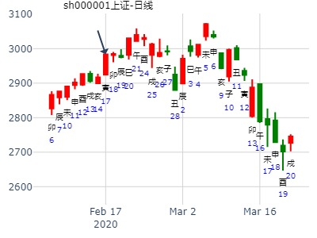
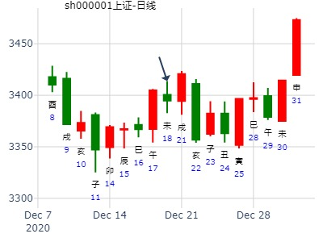

主帖标题: 000698沈阳化工
沈阳化工[000698]买入能否得财？
排卦：元亨利贞网六爻在线排盘系统 http://www.china95.net
公历起卦时间：2008年1月12日9时16分 (手工指定)
干支：丁亥年 癸丑月 辛亥日 癸巳时 （日空：寅卯）
恒静卦
腾蛇 ▅▅ ▅▅ 妻财戌土 应
勾陈 ▅▅ ▅▅ 官鬼申金
朱雀 ▅▅▅▅▅ 子孙午火
青龙 ▅▅▅▅▅ 官鬼酉金 世
玄武 兄弟寅木▅▅▅▅▅ 父母亥水
白虎 ▅▅ ▅▅ 妻财丑土
再人 上证指数乙丑月行情预测？
起卦时间：2019年01月06日10时27分起卦方式：手摇铜钱起卦
干支：戊戌年 乙丑月 癸卯日 丁巳时
旬空：辰巳 戌亥 辰巳 子丑
六神 伏神 震宫：雷风恒
【本 卦】
白虎 ▅▅ ▅▅ 妻财庚戌土 应
滕蛇 ▅▅ ▅▅ 官鬼庚申金
勾陈 ▅▅▅▅▅ 子孙庚午火
朱雀 ▅▅▅▅▅ 官鬼辛酉金 世
青龙 兄弟庚寅木 ▅▅▅▅▅ 父母辛亥水
玄武 ▅▅ ▅▅ 妻财辛丑土
断：全月看涨（世爻暗动，得太岁、月建相生）。其中：
1、首日甲辰日即是起涨点，换句话说，月内最低点就是甲辰日（元月7日）。
2、乙卯日（元月18日）会是一个短线顶点，会有一次回调整固过程发生。
3、月末戊辰日（元月31日）以月内最高点收盘。
马后炮： 旬尾，然后寅卯兄弟空。
创业板己亥走势，己亥年卦。风生水起。雷风恒静卦.md
时间: 2019-02-05 8时32分
干支: 己亥年丙寅月癸酉日 (旬空: 戌亥 )
恒静卦
白虎 ▅▅ ▅▅ 妻财戌土 应
腾蛇 ▅▅ ▅▅ 官鬼申金
勾陈 ▅▅▅▅▅ 子孙午火
朱雀 ▅▅▅▅▅ 官鬼酉金 世
青龙 兄弟寅木▅▅▅▅▅ 父母亥水
玄武 ▅▅ ▅▅ 妻财丑土
主帖标题: 电脑卦试测2020年2月上证哪日是顶？
男 占事：上证2月哪日顶？
公历起卦时间：2020年2月16日10时39分 (电脑自动)
干支：庚子年 戊寅月 己丑日 己巳时 （日空：午未）
震宫：雷风恒 震宫：雷风恒
六神 伏神 本 卦 变 卦
勾陈 妻财庚戌土 ▅▅ ▅▅ 应 妻财庚戌土 ▅▅ ▅▅ 应
朱雀 官鬼庚申金 ▅▅ ▅▅ 官鬼庚申金 ▅▅ ▅▅
青龙 子孙庚午火 ▅▅▅▅▅ 子孙庚午火 ▅▅▅▅▅
玄武 官鬼辛酉金 ▅▅▅▅▅ 世 官鬼辛酉金 ▅▅▅▅▅ 世
白虎 兄弟庚寅木 父母辛亥水 ▅▅▅▅▅ 父母辛亥水 ▅▅▅▅▅
螣蛇 妻财辛丑土 ▅▅ ▅▅ 妻财辛丑土 ▅▅ ▅▅

主帖标题: 占问今年股票财运--张三汉
公历时间：2021年2月12日9时12分
干 支：辛丑年 庚寅月 辛卯日 癸巳时
旬 空：辰巳 午未 午未 午未
神 煞：驿马─巳 桃花─子 日禄─酉 贵人─寅，午
震宫：雷风恒
六神 伏 神 【本 卦】
螣蛇 ▄▄ ▄▄ 妻财庚戌土 应
勾陈 ▄▄ ▄▄ 官鬼庚申金
朱雀 ▄▄▄▄▄ 子孙庚午火
青龙 ▄▄▄▄▄ 官鬼辛酉金 世
玄武 兄弟庚寅木 ▄▄▄▄▄ 父母辛亥水
白虎 ▄▄ ▄▄ 妻财辛丑土
主帖标题: 股市诸葛神数测试
002122输入的三个汉字为：高 新 股
公历时间：2007年3月29日0时21分 星期四
农历时间：丁亥年二月十一子时
干支：丁亥年 癸卯月 壬戌日 庚子时 (旬空：子丑)
震宫：雷风恒
白虎 ▅▅ ▅▅ 妻财庚戌土 应
螣蛇 ▅▅ ▅▅ 官鬼庚申金
勾陈 ▅▅▅▅▅ 子孙庚午火
朱雀 ▅▅▅▅▅ 官鬼辛酉金 世
青龙 兄弟庚寅木 ▅▅▅▅▅ 父母辛亥水
玄武 ▅▅ ▅▅ 妻财辛丑土
以下是引用xadan在2008-3-2 22:52:00的发言：
主题：20080302长力股份何日到顶。
戊子 甲寅 辛丑 己亥 (日空:辰巳 )
(2008/03/02 21:38:25)
雷风恒
腾蛇 妻财戌土 ∥ 应
勾陈 官鬼申金 ∥
朱雀 子孙午火 ／
青龙 官鬼酉金 ／ 震兄弟寅木：
玄武 父母亥水 ／
白虎 妻财丑土 ∥
从卦看还没到顶。应财生世，好股。恒卦长久。基本面看，生弹黄钢的，业绩预增100%，23倍市盈，2.4亿流通盘，9块多的股，二市小有。
先河环保明天-下周五行情。雷风恒静卦。易情股恋提供。.md
时间: 2015-03-10
干支: 乙未年己卯月乙酉日 (旬空: 午未 )
恒静卦
玄武 ▅▅ ▅▅ 妻财戌土 应
白虎 ▅▅ ▅▅ 官鬼申金
腾蛇 ▅▅▅▅▅ 子孙午火
勾陈 ▅▅▅▅▅ 官鬼酉金 世
朱雀 兄弟寅木▅▅▅▅▅ 父母亥水
青龙 ▅▅ ▅▅ 妻财丑土
招财公主钱币卦测002641永高股份二周行情？
公历起卦时间：2015年3月11日10时0分 (手工指定)
干支：乙未年 己卯月 丙戌日 癸巳时 （日空：午未）
震宫：雷风恒 震宫：雷风恒
青龙 妻财庚戌土 ▅▅ ▅▅ 应 妻财庚戌土 ▅▅ ▅▅ 应
玄武 官鬼庚申金 ▅▅ ▅▅ 官鬼庚申金 ▅▅ ▅▅
白虎 子孙庚午火 ▅▅▅▅▅ 子孙庚午火 ▅▅▅▅▅
腾蛇 官鬼辛酉金 ▅▅▅▅▅ 世 官鬼辛酉金 ▅▅▅▅▅ 世
勾陈 兄弟庚寅木 父母辛亥水 ▅▅▅▅▅ 父母辛亥水 ▅▅▅▅▅
朱雀 妻财辛丑土 ▅▅ ▅▅ 妻财辛丑土 ▅▅ ▅▅
占事：赛为智能清明节前走势
起卦方式：手动摇卦 易经股市论坛 在线排盘系统
公历时间：2015年3月19日14时29分
干 支：乙未年 己卯月 甲午日 辛未时 旬 空：辰巳 申酉 (辰巳) 戌亥
震宫：雷风恒
玄武 ▄▄ ▄▄ 妻财庚戌土 应
白虎 ▄▄ ▄▄ 官鬼庚申金
螣蛇 ▄▄▄▄▄ 子孙庚午火
勾陈 ▄▄▄▄▄ 官鬼辛酉金 世
朱雀 兄弟庚寅木 ▄▄▄▄▄ 父母辛亥水
青龙 ▄▄ ▄▄ 妻财辛丑土
恒静卦,上证-大盘到下周末 by 风生水起
时间: 2015-04-03
干支: 乙未年己卯月己酉日 (旬空: 寅卯 )
雷风恒静卦
勾陈 ▅▅ ▅▅ 妻财戌土 应
朱雀 ▅▅ ▅▅ 官鬼申金
青龙 ▅▅▅▅▅ 子孙午火
玄武 ▅▅▅▅▅ 官鬼酉金 世
白虎 ▅▅▅▅▅ 父母亥水
腾蛇 ▅▅ ▅▅ 妻财丑土
亨，无咎，利贞，利有攸往。
4月第二周。卯月雷风恒静卦。世爻月破值日
上证未来三天
时间: 2022-04-26
干支: 壬寅年甲辰月己酉日 (旬空: 寅卯 )
恒静卦
勾陈 ▅▅ ▅▅ 妻财戌土 应
朱雀 ▅▅ ▅▅ 官鬼申金
青龙 ▅▅▅▅▅ 子孙午火
玄武 ▅▅▅▅▅ 官鬼酉金 世
白虎 兄弟寅木▅▅▅▅▅ 父母亥水
腾蛇 ▅▅ ▅▅ 妻财丑土
恒静卦,上证指数-中华走势如何？ by 书本案例
时间: 1996-05-17
干支: 丙子年癸巳月甲寅日 (旬空: 子丑 )
恒静卦
玄武 ▅▅ ▅▅ 妻财戌土 应
白虎 ▅▅ ▅▅ 官鬼申金
腾蛇 ▅▅▅▅▅ 子孙午火
勾陈 ▅▅▅▅▅ 官鬼酉金 世
朱雀 ▅▅▅▅▅ 父母亥水
青龙 ▅▅ ▅▅ 妻财丑土
亨，无咎，利贞，利有攸往。
雷风恒静卦。测巳月全月走势。
公历：2009年5月6日15时12分 星期三 北京时间
干支：己丑年 己巳月 辛亥日 丙申时
旬空：午未 戌亥 寅卯 辰巳
巳月 辛亥日 （旬空：寅卯）
震：雷风恒
六神 伏 神 【本 卦】
螣蛇 ▅▅ ▅▅ 妻财戌土 应
勾陈 ▅▅ ▅▅ 官鬼申金
朱雀 ▅▅▅▅▅ 子孙午火
青龙 ▅▅▅▅▅ 官鬼酉金 世
玄武 兄弟寅木 ▅▅▅▅▅ 父母亥水
白虎 ▅▅ ▅▅ 妻财丑土
姓名：王 占事：300418 短线2周是否危险？
起卦方式：手动摇卦 中国预测网六爻排盘
公历时间：2023年5月4日10时2分
干 支：癸卯年 丙辰月 壬戌日 乙巳时
旬 空：辰巳 子丑 子丑 寅卯
神 煞：驿马─申 桃花─卯 日禄─亥 贵人─巳，卯
震宫：雷风恒
六神 伏 神 【本 卦】
白虎 ▄▄ ▄▄ 妻财庚戌土 应
螣蛇 ▄▄ ▄▄ 官鬼庚申金
勾陈 ▄▄▄▄▄ 子孙庚午火
朱雀 ▄▄▄▄▄ 官鬼辛酉金 世
青龙 兄弟庚寅木 ▄▄▄▄▄ 父母辛亥水
玄武 ▄▄ ▄▄ 妻财辛丑土
主帖标题: mangce比特币5.30戊寅-6.1庚辰哪日底？
mangce比特币5.30-6.1哪日底？
出生：2021 年 性别：男 占事：没填
排卦：元亨利贞网六爻在线排盘系统 https://www.china95.net
公历起卦时间：2021年6月1日8时52分 (电脑自动)
干支：辛丑年 癸巳月 庚辰日 庚辰时 （日空：申酉）
神煞：驿马－寅 桃花－酉 日禄－申 贵人－丑，未
震宫：雷风恒 震宫：雷风恒
六神 伏神 本 卦 变 卦
螣蛇 妻财庚戌土 ▅▅ ▅▅ 应 妻财庚戌土 ▅▅ ▅▅ 应
勾陈 官鬼庚申金 ▅▅ ▅▅ 官鬼庚申金 ▅▅ ▅▅ t w
朱雀 子孙庚午火 ▅▅▅▅▅ 子孙庚午火 ▅▅▅▅▅
青龙 官鬼辛酉金 ▅▅▅▅▅ 世 官鬼辛酉金 ▅▅▅▅▅ 世
玄武 兄弟庚寅木 父母辛亥水 ▅▅▅▅▅ 父母辛亥水 ▅▅▅▅▅
白虎 妻财辛丑土 ▅▅ ▅▅ 妻财辛丑土 ▅▅ ▅▅
上证指数7月14-18日行情预测？[六爻预测][原创]再人
起卦时间：2014年07月13日20时21分起卦方式：电脑自动
干支：甲午年 辛未月 乙酉日 丙戌时 旬空：午未
六神 伏神 震宫：雷风恒
【本 卦】
玄武 ▅▅ ▅▅ 妻财庚戌土 应
白虎 ▅▅ ▅▅ 官鬼庚申金
滕蛇 ▅▅▅▅▅ 子孙庚午火
勾陈 ▅▅▅▅▅ 官鬼辛酉金 世
朱雀 兄弟庚寅木 ▅▅▅▅▅ 父母辛亥水
青龙 ▅▅ ▅▅ 妻财辛丑土
戌日涨。子日冲午火出空，涨。丑日财上卦涨。寅日出伏跌跌。
此卦跟无妄类似，土财在六爻极位，且是土月，但不一定跟无妄一样不涨。
风生水起 2014-7-26 13:51:34
占事: 002114 罗平锌电还会大涨吗
起卦方式：手动摇卦 周易天地www.64gua.com六爻线上排盘系统
公历时间：2014年7月26日13时50分
干支：甲午年 辛未月 戊戌日 己未时 旬空：辰巳 戌亥 辰巳 子丑
恒静卦
朱雀 ▅▅ ▅▅ 妻财戌土 应
青龙 ▅▅ ▅▅ 官鬼申金
玄武 ▅▅▅▅▅ 子孙午火
白虎 ▅▅▅▅▅ 官鬼酉金 世
腾蛇 兄弟寅木▅▅▅▅▅ 父母亥水
勾陈 ▅▅ ▅▅ 妻财丑土
占事：15.7.6-16.7.5 中国石油一年走势
起卦方式：手动摇卦 公历时间：2015年7月6日7时27分
干 支：乙未年 壬午月 癸未日 丙辰时 旬 空：辰巳 申酉 申酉 子丑
震宫：雷风恒
六神 伏 神 【本 卦】
白虎 ▄▄ ▄▄ 妻财庚戌土 应
螣蛇 ▄▄ ▄▄ 官鬼庚申金
勾陈 ▄▄▄▄▄ 子孙庚午火
朱雀 ▄▄▄▄▄ 官鬼辛酉金 世
青龙 兄弟庚寅木 ▄▄▄▄▄ 父母辛亥水
玄武 ▄▄ ▄▄ 妻财辛丑土
占事：国元证券近期 悟道喜悦
起卦方式：手动摇卦 易经股市论坛 www.yijingstock.com 在线排盘系统
公历时间：2014年8月29日8时22分
干 支：甲午年 壬申月 壬申日 甲辰时 旬 空：辰巳 戌亥 (戌亥) 寅卯
震宫：雷风恒
六神 伏 神 【本 卦】
白虎 ▄▄ ▄▄ 妻财庚戌土 应
螣蛇 ▄▄ ▄▄ 官鬼庚申金
勾陈 ▄▄▄▄▄ 子孙庚午火
朱雀 ▄▄▄▄▄ 官鬼辛酉金 世
青龙 兄弟庚寅木 ▄▄▄▄▄ 父母辛亥水
玄武 ▄▄ ▄▄ 妻财辛丑土
申月申日雷风恒静卦，占事：国元证券近期。短线横盘，戌月得气涨。.md
9月12，24日两个戌日涨。
占事：002075沙钢股份8月份走势
公历起卦时间：2016年8月29日11时11分 (在线摇卦)
干支：丙申年 丙申月 癸未日 戊午时 （日空：申酉）
震宫：雷风恒 震宫：雷风恒
六神 伏神 本 卦 变 卦
白虎 妻财庚戌土 ▅▅ ▅▅ 应 妻财庚戌土 ▅▅ ▅▅ 应
腾蛇 官鬼庚申金 ▅▅ ▅▅ 官鬼庚申金 ▅▅ ▅▅
勾陈 子孙庚午火 ▅▅▅▅▅ 子孙庚午火 ▅▅▅▅▅
朱雀 官鬼辛酉金 ▅▅▅▅▅ 世 官鬼辛酉金 ▅▅▅▅▅ 世
青龙 兄弟庚寅木 父母辛亥水 ▅▅▅▅▅ 父母辛亥水 ▅▅▅▅▅
玄武 妻财辛丑土 ▅▅ ▅▅ 妻财辛丑土 ▅▅ ▅▅
有钱赚
主帖标题: 裕隆原创测大盘指数
公历起卦时间：2017年8月7日9时54分
干支：丁酉年 丁未月 丙寅日 癸巳时 （日空：戌亥）
神煞：驿马－申 桃花－卯 日禄－巳 贵人－酉，亥
震宫：雷风恒
六神 伏神 本 卦
青龙 妻财庚戌土 ▅▅ ▅▅ 应
玄武 官鬼庚申金 ▅▅ ▅▅
白虎 子孙庚午火 ▅▅▅▅▅
腾蛇 官鬼辛酉金 ▅▅▅▅▅ 世
勾陈 兄弟庚寅木 父母辛亥水 ▅▅▅▅▅
朱雀 妻财辛丑土 ▅▅ ▅▅
丑财月破日克，寅兄虽伏却透出日令，明日虽进孟秋，不宜又逢兄之旺地，本周先跌后涨。卯日恐见底
000400许继电气到年底--金玉堂
时间: 2019-08-27 20时16分
干支: 己亥年壬申月丙申日 (旬空: 辰巳 )
恒静卦
青龙 ▅▅ ▅▅ 妻财戌土 应
玄武 ▅▅ ▅▅ 官鬼申金
白虎 ▅▅▅▅▅ 子孙午火
腾蛇 ▅▅▅▅▅ 官鬼酉金 世
勾陈 兄弟寅木▅▅▅▅▅ 父母亥水
朱雀 ▅▅ ▅▅ 妻财丑土
占事：9月13-17大盘涨跌？
公历时间：2010年9月10日16时6分 星期五
干支：庚寅年 乙酉月 癸亥日 庚申时 (旬空：子丑)
神煞：驿马—巳 桃花—子 日禄—子 贵人—卯，巳
震宫：雷风恒
六神 伏 神 【本 卦】
白虎 ▅▅ ▅▅ 妻财庚戌土 应
螣蛇 ▅▅ ▅▅ 官鬼庚申金
勾陈 ▅▅▅▅▅ 子孙庚午火
朱雀 ▅▅▅▅▅ 官鬼辛酉金 世
青龙 兄弟庚寅木 ▅▅▅▅▅ 父母辛亥水
玄武 ▅▅ ▅▅ 妻财辛丑土
上证指数913日二周涨跌横？硬币卦211122
时间: 2021-09-13 17时58分
干支: 辛丑年丁酉月甲子日 (旬空: 戌亥 )
恒静卦
玄武 ▅▅ ▅▅ 妻财戌土 应
白虎 ▅▅ ▅▅ 官鬼申金
腾蛇 ▅▅▅▅▅ 子孙午火
勾陈 ▅▅▅▅▅ 官鬼酉金 世
朱雀 兄弟寅木▅▅▅▅▅ 父母亥水
青龙 ▅▅ ▅▅ 妻财丑土
卦完见顶。子孙日破。
酉月子日雷风恒静卦。应爻旬空逢冲。原神日破，财不得日月又旬空。、
子孙被日冲破。财爻不得日月生助。
戌日小反弹顶。辰日冲应爻财跌。
巳日子孙得气涨。
新野纺织[002087]，未来走势？
公历起卦时间：2007年10月24日7时39分 (手工指定)
干支：丁亥年庚戌月辛卯日壬辰时 （日空：午未）
恒静卦
腾蛇 ▅▅ ▅▅ 妻财戌土 应
勾陈 ▅▅ ▅▅ 官鬼申金
朱雀 ▅▅▅▅▅ 子孙午火
青龙 ▅▅▅▅▅ 官鬼酉金 世
玄武 兄弟寅木▅▅▅▅▅ 父母亥水
白虎 ▅▅ ▅▅ 妻财丑土
世爻官鬼暗动。暴跌开始。
姓名：niubi 占事：个股今明2日--乾隆币卦
起卦方式：手工指定
公历时间：2015年10月8日7时32分
乙未年 丙戌月 丁巳日 甲辰时
旬 空：辰巳 午未 (子丑) 寅卯
震宫：雷风恒
青龙 ▄▄ ▄▄ 妻财庚戌土 应
玄武 ▄▄ ▄▄ 官鬼庚申金
白虎 ▄▄▄▄▄ 子孙庚午火
螣蛇 ▄▄▄▄▄ 官鬼辛酉金 世
勾陈 兄弟庚寅木 ▄▄▄▄▄ 父母辛亥水
朱雀 ▄▄ ▄▄ 妻财辛丑土
贝因美近期走势--今天与下周
时间: 2015-10-30 8时5分
干支: 乙未年丙戌月己卯日 (旬空: 申酉 )
恒静卦
勾陈 ▅▅ ▅▅ 妻财戌土 应
朱雀 ▅▅ ▅▅ 官鬼申金
青龙 ▅▅▅▅▅ 子孙午火
玄武 ▅▅▅▅▅ 官鬼酉金 世
白虎 兄弟寅木▅▅▅▅▅ 父母亥水
腾蛇 ▅▅ ▅▅ 妻财丑土
主帖标题: 张三汉的个股卦集合贴
美尚生态明天28日走势 手摇卦
姓名： 出生年:1981 性别：男 占事：
起卦方式：手工指定
公历时间：2019年11月27日20时42分
干 支：己亥年 乙亥月 戊辰日 壬戌时
旬 空：辰巳 申酉 戌亥 子丑
震宫：雷风恒
六神 伏 神 【本 卦】
朱雀 ▄▄ ▄▄ 妻财庚戌土 应
青龙 ▄▄ ▄▄ 官鬼庚申金
玄武 ▄▄▄▄▄ 子孙庚午火
白虎 ▄▄▄▄▄ 官鬼辛酉金 世
螣蛇 兄弟庚寅木 ▄▄▄▄▄ 父母辛亥水
勾陈 ▄▄ ▄▄ 妻财辛丑土
主帖标题: 11.9新联电子收盘走势？
公历起卦时间：2021年11月9日6时26分 (电脑自动)
干支：辛丑年 己亥月 辛酉日 辛卯时 （日空：子丑）
震宫：雷风恒 震宫：雷风恒
六神 伏神 本 卦 变 卦
螣蛇 妻财庚戌土 ▅▅ ▅▅ 应 妻财庚戌土 ▅▅ ▅▅ 应
勾陈 官鬼庚申金 ▅▅ ▅▅ 官鬼庚申金 ▅▅ ▅▅
朱雀 子孙庚午火 ▅▅▅▅▅ 子孙庚午火 ▅▅▅▅▅
青龙 官鬼辛酉金 ▅▅▅▅▅ 世 官鬼辛酉金 ▅▅▅▅▅ 世
玄武 兄弟庚寅木 父母辛亥水 ▅▅▅▅▅ 父母辛亥水 ▅▅▅▅▅
白虎 妻财辛丑土 ▅▅ ▅▅ 妻财辛丑土 ▅▅ ▅▅
登海种业1124二周。亥月雷风恒静卦。世爻官鬼旬空。.md
时间: 2021-11-24 11时01分
干支: 辛丑年己亥月丙子日 (旬空: 申酉 )
恒静卦
青龙 ▅▅ ▅▅ 妻财戌土 应
玄武 ▅▅ ▅▅ 官鬼申金
白虎 ▅▅▅▅▅ 子孙午火
腾蛇 ▅▅▅▅▅ 官鬼酉金 世
勾陈 兄弟寅木▅▅▅▅▅ 父母亥水
朱雀 ▅▅ ▅▅ 妻财丑土
子孙爻被日冲破。丑日在初爻小反弹。
东华科技1127二周。亥月雷风恒静卦。
时间: 2021-11-27
干支: 辛丑年己亥月己卯日 (旬空: 申酉 )
恒静卦
勾陈 ▅▅ ▅▅ 妻财戌土 应
朱雀 ▅▅ ▅▅ 官鬼申金
青龙 ▅▅▅▅▅ 子孙午火
玄武 ▅▅▅▅▅ 官鬼酉金 世
白虎 兄弟寅木▅▅▅▅▅ 父母亥水
腾蛇 ▅▅ ▅▅ 妻财丑土
卯戌合，应到辰日冲开大涨？
辰日财来合世，辰戌冲。影线。
起卦日：卯酉冲世，卯戌合。
世酉应戌，逢卯戌则轮流冲合。变化惊人。
天同问11月11日大盘日卦。雷风恒静卦。
时间: 2022-11-10 15时0分
干支: 壬寅年辛亥月丁卯日 (旬空: 戌亥 )
恒静卦
青龙 ▅▅ ▅▅ 妻财戌土 应
玄武 ▅▅ ▅▅ 官鬼申金
白虎 ▅▅▅▅▅ 子孙午火
腾蛇 ▅▅▅▅▅ 官鬼酉金 世
勾陈 兄弟寅木▅▅▅▅▅ 父母亥水
朱雀 ▅▅ ▅▅ 妻财丑土 、
辰日财来合世，辰戌冲。影线。
起卦日：卯酉冲世，卯戌合。
世酉应戌，逢卯戌则轮流冲合。变化惊人。
300418昆仑万维到下周五
时间: 2024-11-13 20时48分
干支: 甲辰年乙亥月辛巳日 (旬空: 申酉 )
恒静卦
腾蛇 ▅▅ ▅▅ 妻财戌土 应
勾陈 ▅▅ ▅▅ 官鬼申金
朱雀 ▅▅▅▅▅ 子孙午火
青龙 ▅▅▅▅▅ 官鬼酉金 世
玄武 兄弟寅木▅▅▅▅▅ 父母亥水
白虎 ▅▅ ▅▅ 妻财丑土
雷风恒，静卦。辰日冲戌财日破。大跌。
2010.12.20－12.24，股指期货IFL0周卦
公历起卦时间：2010年12月20日8时11分 (在线摇卦)
干支：庚寅年 戊子月 甲辰日 戊辰时 （日空：寅卯）
震宫：雷风恒 震宫：雷风恒
六神 伏神 本 卦 变 卦
玄武 妻财庚戌土 ▅▅ ▅▅ 应 妻财庚戌土 ▅▅ ▅▅ 应
白虎 官鬼庚申金 ▅▅ ▅▅ 官鬼庚申金 ▅▅ ▅▅
腾蛇 子孙庚午火 ▅▅▅▅▅ 子孙庚午火 ▅▅▅▅▅
勾陈 官鬼辛酉金 ▅▅▅▅▅ 世 官鬼辛酉金 ▅▅▅▅▅ 世
朱雀 兄弟庚寅木 父母辛亥水 ▅▅▅▅▅ 父母辛亥水 ▅▅▅▅▅
青龙 妻财辛丑土 ▅▅ ▅▅ 妻财辛丑土 ▅▅ ▅▅
1。辰日大跌。冲应爻日破。
参考：冬月旬空逢冲。
天同问11月11日大盘日卦。雷风恒静卦。.note
风生水起占事：603023 今天和明天
起卦方式：手动摇卦
公历时间：2015年12月3日8时17分
干 支：乙未年 丁亥月 癸丑日 丙辰时
旬 空：辰巳 午未 寅卯 子丑
震宫：雷风恒
六神 伏 神 【本 卦】
白虎 ▄▄ ▄▄ 妻财庚戌土 应
螣蛇 ▄▄ ▄▄ 官鬼庚申金
勾陈 ▄▄▄▄▄ 子孙庚午火
朱雀 ▄▄▄▄▄ 官鬼辛酉金 世
青龙 兄弟庚寅木 ▄▄▄▄▄ 父母辛亥水
玄武 ▄▄ ▄▄ 妻财辛丑土
男 占事：12月11日前大盘走势
公历起卦时间：2015年12月6日21时7分 (在线摇卦)
干支：乙未年 丁亥月 丙辰日 己亥时 （日空：子丑）
震宫：雷风恒 震宫：雷风恒
六神 伏神 本 卦 变 卦
青龙 妻财庚戌土 ▅▅ ▅▅ 应 妻财庚戌土 ▅▅ ▅▅ 应
玄武 官鬼庚申金 ▅▅ ▅▅ 官鬼庚申金 ▅▅ ▅▅
白虎 子孙庚午火 ▅▅▅▅▅ 子孙庚午火 ▅▅▅▅▅
腾蛇 官鬼辛酉金 ▅▅▅▅▅ 世 官鬼辛酉金 ▅▅▅▅▅ 世
勾陈 兄弟庚寅木 父母辛亥水 ▅▅▅▅▅ 父母辛亥水 ▅▅▅▅▅
朱雀 妻财辛丑土 ▅▅ ▅▅ 妻财辛丑土 ▅▅ ▅▅
占事：大盘子月3216 起卦方式：手动摇卦 九戒
公历时间：2016年12月8日11时12分
干 支：丙申年 庚子月 甲子日 庚午时
旬 空：辰巳 辰巳 (戌亥) 戌亥
震宫：雷风恒
六神 伏 神 【本 卦】
玄武 ▄▄ ▄▄ 妻财庚戌土 应
白虎 ▄▄ ▄▄ 官鬼庚申金
螣蛇 ▄▄▄▄▄ 子孙庚午火
勾陈 ▄▄▄▄▄ 官鬼辛酉金 世
朱雀 兄弟庚寅木 ▄▄▄▄▄ 父母辛亥水
青龙 ▄▄ ▄▄ 妻财辛丑土
子孙午火月破，涨不动还要跌。
12月大盘，雷风恒。电脑在线摇卦。.md
公历起卦时间：2020年12月2日15时12分 (在线摇卦)
干支：庚子年 丁亥月 己卯日 壬申时 （日空：申酉）
神煞：驿马－巳 桃花－子 日禄－午 贵人－子，申
震宫：雷风恒 震宫：雷风恒
六神 伏神 本 卦 变 卦
勾陈 妻财庚戌土 ▅▅ ▅▅ 应 妻财庚戌土 ▅▅ ▅▅ 应
朱雀 官鬼庚申金 ▅▅ ▅▅ 官鬼庚申金 ▅▅ ▅▅
青龙 子孙庚午火 ▅▅▅▅▅ 子孙庚午火 ▅▅▅▅▅
玄武 官鬼辛酉金 ▅▅▅▅▅ 世 官鬼辛酉金 ▅▅▅▅▅ 世
白虎 兄弟庚寅木 父母辛亥水 ▅▅▅▅▅ 父母辛亥水 ▅▅▅▅▅
螣蛇 妻财辛丑土 ▅▅ ▅▅ 妻财辛丑土 ▅▅ ▅▅
主帖标题: [股市杂谈] 梅花小孩论阴阳升降断法
出生：2020 年 性别：男 占事：上证12.18上午的收盘走势
排卦：元亨利贞网六爻在线排盘系统 https://www.china95.net
公历起卦时间：2020年12月18日7时38分 (电脑自动)
干支：庚子年 戊子月 乙未日 庚辰时 （日空：辰巳）
神煞：驿马－巳 桃花－子 日禄－卯 贵人－子，申
震宫：雷风恒 震宫：雷风恒
六神 伏神 本 卦 变 卦
玄武 妻财庚戌土 ▅▅ ▅▅ 应 妻财庚戌土 ▅▅ ▅▅ 应
白虎 官鬼庚申金 ▅▅ ▅▅ 官鬼庚申金 ▅▅ ▅▅
螣蛇 子孙庚午火 ▅▅▅▅▅ 子孙庚午火 ▅▅▅▅▅
勾陈 官鬼辛酉金 ▅▅▅▅▅ 世 官鬼辛酉金 ▅▅▅▅▅ 世
朱雀 兄弟庚寅木 父母辛亥水 ▅▅▅▅▅ 父母辛亥水 ▅▅▅▅▅
青龙 妻财辛丑土 ▅▅ ▅▅ 妻财辛丑土 ▅▅ ▅▅

主帖标题: 好货， 送两个卦给大家。
求测人：力芯微(年命：戊午),预测地:未知
起卦方式：铜钱摇卦 占问事宜：力芯微连跌2日， 跌到何日
起卦公历：2022年12月5日12时45分(北京时间)
干支： 壬寅年 辛亥月 壬辰日 丙午时 (卦身：寅)
主变卦 雷风恒(震宫) [空亡:午、未]
白虎 ━ ━ 妻财庚戌土 应
螣蛇 ━ ━ 官鬼庚申金
勾陈 ━━━ 子孙庚午火
朱雀 ━━━ 官鬼辛酉金 世
青龙 兄弟庚寅木 ━━━ 父母辛亥水
玄武 ━ ━ 妻财辛丑土